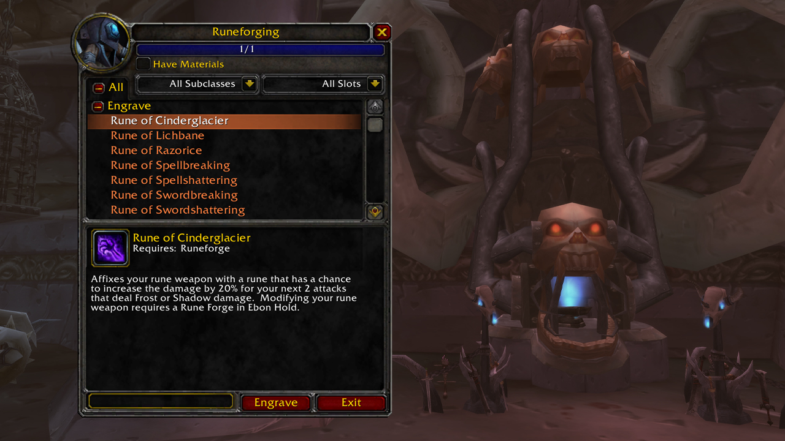
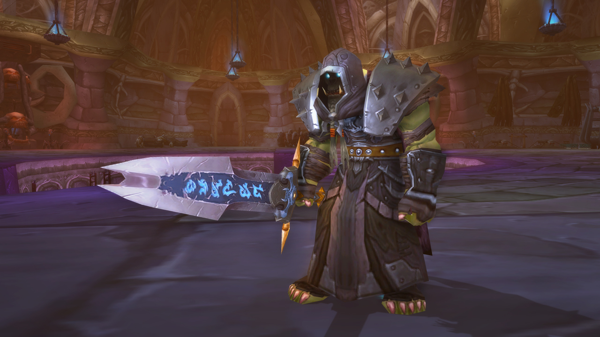
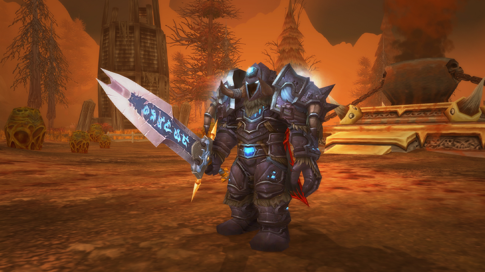

The Lich King, Arthas Menethil, sits in the ominous Icecrown Citadel scheming to claim the world as his own—a plan that threatens all life on Azeroth. Heroes of the Alliance and Horde must stand against the malevolent being who dares to declare himself the one true king of Azeroth...and seeks to scour all life from the world.
Ominus portents gust in on icy winds blowing into Azeroth from the cold lands of Northrend. The Lich King's undead forces are on the move, and heroes are needed once more to stem the tide of the Scourge before it's too late. With the release of the Wrath of The Lich King pre-patch, players can create their first Death Knight Hero class, take up the way of the scribe with the new Inscription Profession, and experience a host of new system updates.
The Lich King's armies present an ever-present threat to all life on Azeroth. Some of his most terrifying servants are known as Death Knights—unliving instruments of the Lich King's will.

Unlike mindless Scourge puppets such as ghouls and skeletons, a Death Knight is a former hero of Azeroth that's been risen into undeath to serve the Lich King for all eternity. As World of Warcraft's first Hero Class, they start at a higher level than other classes, and start their journey in a class-exclusive introductory experience.
A Death Knight can shift between three different Presences, each granting a personal benefit. Only one Presence can be active at a time. New Death Knights start with Blood Presence and learn the remaining Presences through leveling.
Death Knights have access to a unique way to enhance their weapons called Runeforging. Runeforging is done at a Runeforge (an easily accessible one can be found at Acherus, the Ebon Hold). Such weapon enhancements do not stack with normal weapon enchantments; rather they are a way for Death Knights to obtain exclusive effects that cater more to their class and playstyle choices.
After selecting your Death Knight's race, hair style and color, body type, and the hardest choice of all—the name—you're now ready to dominate Azeroth. There's only one small detail: you're still bound to the Lich King's will. All that's left for now is for you to do what any other freshly raised undead minion of the Lich King would: obey unquestioningly.
 Power your way through quests and zones as you battle to level 80. Assault the terrifying Wrathgate, war in Lake Wintergrasp, uncover secrets of Dalaran reborn, and much more.
Stop the machinations of the reanimated lich Kel'Thuzad, assist the dragons of Wyrmrest Temple against Malygos, and prepare for an inevitable showdown with the Lich King.
With Cold Weather Flying Skill, you can conquer the biting chill of the Northrend air in no time, so bundle up and get ready.
The Classic Arena Tournament is back with the launch of Wrath of the Lich King! fight for the top spot in your region to take home the Championship Title!
Download the Battle.net App, sign in to your Battle.net Account, and install the game.